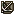

Character Overview
Xavier is notorious for being one of the most difficult units to recruit in Fire Emblem history. His recruitment is so complicated
that I won't even bother trying to summarize it here.
Xavier is a General that can be recruited in Chapter 18 after the route split. He's one of the only Generals you can have in the game, besides
Dalsin, and one of the only units that can use lances in indoor maps. He has great weapon ranks, superior DEF, okay-ish growths, and a few impressive
skills that definitely make him stand out.
Unfortunately, his weaknesses outweigh his usefulness. His low MOV and weakness to MAG/Staves kill his potential. Not to mention, many enemies in the
endgame have armor-slaying weapons and powerful magic, which can cut right through Xavier's defenses. It's safe to say that Xavier is not worth
his agonizing recruitment.
Xavier can still be helpful, though, as he is decent in combat if equipped with Master/Brave weapons, and his Wrath/Big Shield combo can really
help his enemy-phase potential. Overall, Xavier is not worth it, but he's such a fun and different unit that he might be worth a try.
Base Stats and Growths
| Level 6 General | HP | STR | MAG | SKL | SPD | LCK | DEF | CON | MOV |
|---|---|---|---|---|---|---|---|---|---|
| Base Stats | 38 | 13 | 3 | 9 | 6 | 3 | 17 | 15 | 6 |
| Growth Rates | 50% | 40% | 45% | 55% | 50% | 70% | 15% | 10% | 1% |
Don't let Xavier's atrocious base 6 SPD distract you from his monster 17 DEF. Being a General, Xavier excels in DEF, but lacks MOV and the SPD to double. Since Xavier's DEF is so high, many enemies might ignore him completely when you first recruit him. Xavier is a massive wall with his base stats, and he can only get better with his good growths.
Most of his stats have about a coin-flip chance to level up, which makes scroll abusing him very reliable. A surprising 50% SPD growth can potentially fix his attack speed issue, espeically since he has a really high CON, but with only 14 levels left, Xavier will still need to level up a point of SPD every level-up to cap the stat. An equally surprising 45% MAG growth means that, with scroll abuse, Xavier can potentially level up his MAG decently high and tank some hits. SKL and STR have a decently high chance to level, even more so with scroll usage, but Xavier is already promoted, so throwing EXP at him will take a while. His DEF growth might be disappointing at 15%, but his base 17 DEF is high enough so that you don't ever have to worry about Xavier's DEF!
Other Stats
| Weapon Ranks | Skills | PCC | Leadership Stars | Movement Stars | Promotion Gains |
|---|---|---|---|---|---|
Bow - A |
 Wrath Wrath Accost AccostPavise |
0 | 1 | 0 | Prepromoted Unit |
Xavier's weapon ranks and skills are pretty impressive, but they don't help him as much as you might think. To begin, an E rank in Lances is very disappointing, as Xavier is the only unit besides Dalsin who can wield lances indoors. So, if you use to have an indoor lance user, you'll have to train this weapon rank, which is extremely difficult, borderline impossible, really. A C Sword rank is decent, but you'll want to work towards a B rank, as Xavier can wield Silver/Master/Armorslayers with that rank. He does have an A rank in Axes, and surprisingly, Bows. This makes Xavier the best candidate to use any powerful Axe and the Brave Bow. Realistically, you'll only be able to use powerful Axes and the Brave/Killer bow with Xavier to make him fight competently. However, do yourself a favor and give Xavier the Brave Bow. He can become a sniper with this brave weapon, and not only that, his Accost skill will ensure that he will kill his target.
Speaking of Accost, Xavier's skills are also pretty cool. His Pavise skill gives him a percent chance to null all incoming damage based on his class level, which is an incentive to maxing his level up to 20. His Wrath skill, combined with his Brave Bow or other Master weapon, ensures that he'll kill any enemy who dares to stand before him in the enemy phase. However, none of these skills really make up for Xavier's weaknesses. His Accost skill mostly works against Xavier's favor instead of for him, as many of the endgame enemies will attack his weaknesses with armorslaying weapons and magic, and extra attacks against him won't help. At the end of the day, Xavier's cool skills and nice weapon ranks do not change the fact that his skills are situationary and his weapon ranks aren't necessarily special. Many other units can perform better than Xavier with much less effort, but if you do decide to make Xavier an absolute monster, consider reading the tips below.
PRF's and Support Bonuses
| This unit does not have any PRFs. |
|---|
Supports: None
Supported by: Leif
Character Tips
If you're serious about using Xavier, then the most important scrolls you can give him are either the Ced or Heim scrolls, as they offer great growth rate bonuses to SPD and MAG, Xavier's greatest weaknesses. The Njörun scroll may also be necessary if you want to cap Xavier's STR, as he has a base STR of 13 and may require some assistance. As Xavier gains some levels, he may be a bit more usable, especially in the last map, but if you really want to make Xavier go crazy, then you could always arena abuse him.
I don't usually suggest this, but for characters that I think are at the bottom-of-the-barrel garbage tier, I'd like to suggest the best scrolls to use while arena grinding, since the growth rate bonuses stack. Don't get me wrong, I don't think Xavier is bad, but his recruitment is so ridiculously hard that I feel like I need to suggest an arena grinding strategy so that players can actually use him for their troubles. Anyway, the best scrolls to put on Xavier are the Heim, Ced, Njörun, Baldr, and Thrud scrolls. This will boost his growth rates to HP - 50%, STR - 80%, MAG - 80%, SKL - 70%, SPD - 95%, LCK - 85%, DEF - 15%. The last few inventory slots can be interchanged depending on what stat you want to prioritize. Hoðr for HP, Od for SKL, Dain for DEF, etc. The arena in Thracia 776 isn't too threatening, as semi-powerful units will have little chance of actually dying. If you want Xavier to be a boss, then be ready to arena abuse him. Otherwise, he's a decent unit with one too many weaknesses.